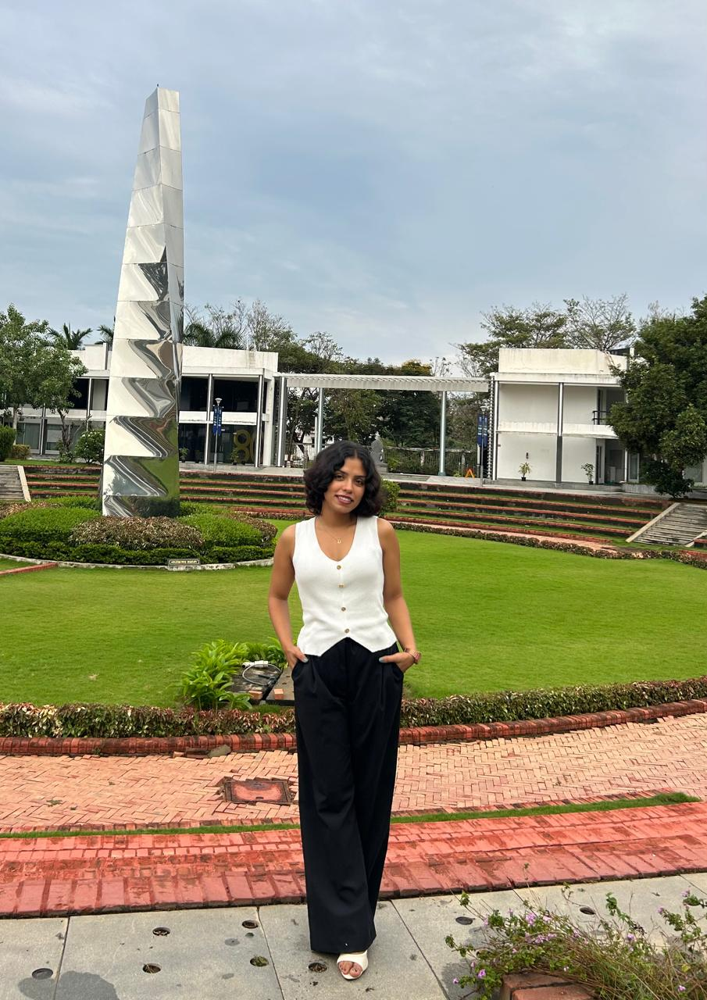

Hello, I'm
An Engineer Who Kept Stepping Beyond the Job Title —
Now Building the Leadership Skills to Match
MBA (PGPM), Class of 2027 — Great Lakes Institute of Management
Formerly at Worley India Services

Adept at driving process improvement and process documentation across international projects, ensuring timely execution, cross-functional collaboration, and alignment with business objectives.
With 32 months at Worley India Services, I've supported the design and execution of multi-million-dollar international projects across the USA, the Netherlands, and Bahrain in the oil & gas industry, and stepped up as an acting Project Co-Ordinator across cross-functional teams.
Currently pursuing my MBA (PGPM) at Great Lakes Institute of Management, Chennai, I'm combining my engineering background with business strategy to drive impactful outcomes.
Worley India Services
Worley India Services
Worley India Services
A Bottleneck Study and Simulation-Based Improvement Framework Leveraging Agentic AI
GLIM, Ongoing
End-to-End Odoo Configuration and BPMN Process Modeling for a 5-Outlet Chain
GLIM, 2026
Great Lakes Institute of Management, Chennai
CGPA: 3.1 | 2027
Datta Meghe College of Engineering, Navi Mumbai
76.34% | 2023
V.G. Vaze College of Arts, Science and Commerce
71.38% | 2019
Saraswati Vidyalaya High School and Junior College of Science
98% | 2017